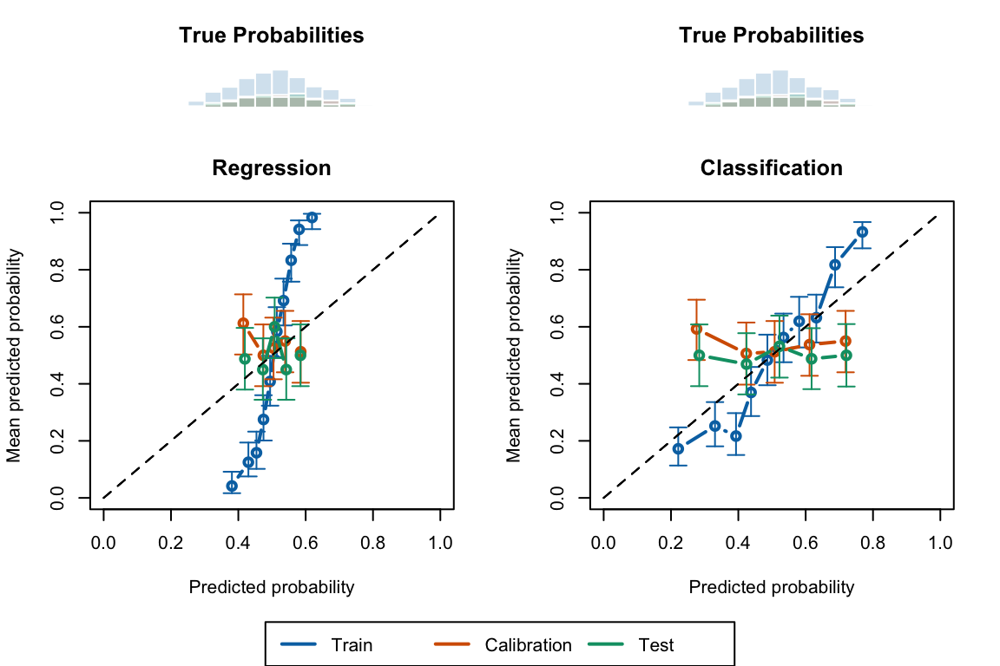
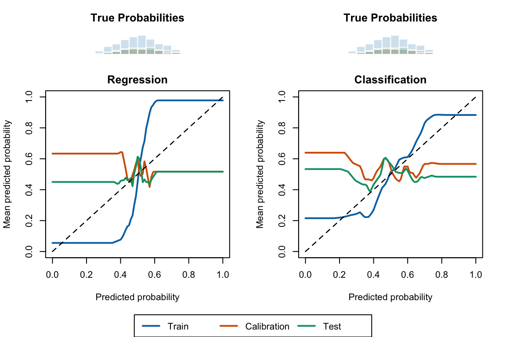

In this chapter, we examine the calibration of a random forest, before and after some recalibration of the scores is done by one of the techniques mentioned in Chapter 2. We consider two cases: one in which the random forest performs a regression task, and another in which it performs a classification task. As in the previous chapters, we consider a binary outcome variable, drawn from the same data generating process as in Chapter 1.
The basic idea is to learn a function \(g(\cdot)\) mapping scores \(s(x)\) into probability estimates \(g(p) := \mathbb{E}[D \mid s(x) = p]\). To avoid overfitting, the training data while learning that mapping, we will rely on data from the calibration set, defined in the function get_samples().
To avoid overfitting, the data will be split into training (used to train the random forest), calibration (to recalibrate the scores) and test sets (to assess the performances on unseen data).
Display the definitions of colors.
library(tidyverse)
── Attaching core tidyverse packages ──────────────────────── tidyverse 2.0.0 ──
✔ dplyr 1.1.4 ✔ readr 2.1.4
✔ forcats 1.0.0 ✔ stringr 1.5.0
✔ ggplot2 3.4.4 ✔ tibble 3.2.1
✔ lubridate 1.9.3 ✔ tidyr 1.3.0
✔ purrr 1.0.2
── Conflicts ────────────────────────────────────────── tidyverse_conflicts() ──
✖ dplyr::filter() masks stats::filter()
✖ dplyr::lag() masks stats::lag()
ℹ Use the conflicted package (<http://conflicted.r-lib.org/>) to force all conflicts to become errors
#' Simulates binary data#'#' @param n_obs number of desired observations#' @param seed seed to use to generate the datasim_data <-function(n_obs =2000, seed) {set.seed(seed) x1 <-runif(n_obs) x2 <-runif(n_obs) x3 <-runif(n_obs) x4 <-runif(n_obs) epsilon_p <-rnorm(n_obs, mean =0, sd = .5)# True latent score eta <--0.1*x1 +0.05*x2 +0.2*x3 -0.05*x4 + epsilon_p# True probability p <- (1/ (1+exp(-eta)))# Observed event d <-rbinom(n_obs, size =1, prob = p)tibble(# Event Probabilityp = p,# Binary outcome variabled = d,# Variablesx1 = x1,x2 = x2,x3 = x3,x4 = x4 )}
3.2 Splitting the dataset
The process applied in this chapter is divided the following parts:
get the trained Random Forest classifier or regressions from Chapter 1 to obtain the predicted scores \(\hat{s}(\boldsymbol x_i)\) (i.e., either \(\hat{p}_{\text{score}}\) or \(\hat{p}_{\text{vote}}\))
recalibrating the obtained scores through different approaches defined in Chapter 2
recalculating the different calibration metrics on the recalibrated predicted scores.
Therefore, it is necessary to split the dataset into three parts:
a train set: to train the Random Forest classifier,
a calibration set: to train the recalibrator,
a test set: on which we will compute the calibration metrics.
To split the data, we define the get_samples() function.
#' Get calibration/test samples from the DGP#'#' @param seed seed to use to generate the data#' @param n_obs number of desired observationsget_samples <-function(seed,n_obs =2000) {set.seed(seed) data_all <-sim_data(n_obs = n_obs, seed = seed )# Train/calibration/test sets---- data <- data_all |>select(d, x1:x4) true_probas <- data_all |>select(p) train_index <-sample(1:nrow(data), size = .6*nrow(data), replace =FALSE) tb_train <- data |>slice(train_index) tb_calib_test <- data |>slice(-train_index) true_probas_train <- true_probas |>slice(train_index) true_probas_calib_test <- true_probas |>slice(-train_index) calib_index <-sample(1:nrow(tb_calib_test), size = .5*nrow(tb_calib_test), replace =FALSE ) tb_calib <- tb_calib_test |>slice(calib_index) tb_test <- tb_calib_test |>slice(-calib_index) true_probas_calib <- true_probas_calib_test |>slice(calib_index) true_probas_test <- true_probas_calib_test |>slice(-calib_index)list(data_all = data_all,data = data,tb_train = tb_train,tb_calib = tb_calib,tb_test = tb_test,true_probas_train = true_probas_train,true_probas_calib = true_probas_calib,true_probas_test = true_probas_test,train_index = train_index,calib_index = calib_index,seed = seed,n_obs = n_obs )}
Throughout this chapter, we will adopt the following colours: blue for the train set, orange for the calibration, and green for the test set.
For a classification task, the randomForest() function from {randomForest} returns the majority vote (\(\hat{d}_i = 0\) or \(\hat{d}_i =1\)) for each tree \(i\) of the forest composed of \(n_T\) trees. When a user specifically asks a predicted probability, the estimation is made by computing the average of the majority votes among all the trees of the forest: \[\hat{p}_{\text{vote}} = \sum_{i = 1}^{n_T} \hat{d}_i. \tag{3.1}\]
We would like to examine if computing the average of the trees’ predicted probability \(\hat{p}_i\) rather than the trees’ majority vote \(\hat{d}_i\) affects the calibration: \[\hat{p}_{\text{score}} = \sum_{i=1}^{n_T} \hat{p}_i. \tag{3.2}\]
We will train an random forest in both cases. However, to illustrates the methods, we will first have a look at estimations made with a small forest that contains only 4 trees.
library(randomForest)
To better visualize how the randomForest function works, let us begin with a small forest with only 4 trees. Using the keep.forest argument of the randomForest() function allows to keep the predictions made by each tree.
We make sure to build a classifier here, by forcing the d variable to be a factor :
set.seed(123) # for replicationrf_classif <-randomForest( d ~ ., data = toy_data_train |>mutate(d =factor(d)),nodesize =0.1*nrow(toy_data_train), # minimum size of terminal nodeskeep.forest =TRUE,ntree =4)rf_classif$type
[1] "classification"
Setting predict.all =TRUE in the predict.randomForest() function allows to obtain the predictions made by each tree in a matrix where the examples are given in rows and the trees majority votes \(\hat{d}_i\) returned by the trees are given in columns when setting either type ="prob" or type == "response:
# Predictions made by each tree# columns: estimated class for a tree; row: casespred_classif_prob <-predict( rf_classif, newdata = toy_data_train, type ="prob", predict.all =TRUE)# Predictions of the 4 trees for the first 6 caseshead(pred_classif_prob$individual)
# Predictions made by each tree# columns: estimated probability for a tree; row: casespred_classif_vote <-predict( rf_classif, newdata = toy_data_train, type ="vote", predict.all =TRUE)head(pred_classif_vote$individual)
The help page of the predict.randomForest() function states that setting the argument type = prob returns a matrix of class probabilities when the tree is a classifier (when object$type is classification). This does not seem to be the case.
We will thus need a little trick to get the estimated probabilities of each tree, by growing the random forest in a regression context (as we will do in Chapters 4). As the response variable is binary with values 0 and 1, the regression tree and the classification tree are equivalent.
We can see that the predicted individual probabilities of positives are proportions of 1 in the \(n_T\) trees of the forest:
The response variable \(d\) is a numerical variable. The randomForest() function will therefore consider a regression task if we do not turn that response variable into a factor.
set.seed(123) # for replicationrf_reg <-randomForest( d ~ ., data = toy_data_train,nodesize =0.1*nrow(toy_data_train), # minimum size of terminal nodeskeep.forest =TRUE,ntree =4)rf_reg$type
[1] "regression"
This time, the predict.randomForest() function, when setting type ="response" and predict.all =TRUE will return for each individual in row, the predicted probabilities \(\hat{p}_i\) of each tree \(i\):
# Predictions made by each tree# columns: estimated probability for a tree; row: examplepred_reg_prob <-predict( rf_reg, newdata = toy_data_train, type ="response", predict.all =TRUE)head(pred_reg_prob$individual)
We define the function apply_rf() to fit a random forest on the train dataset, in the regression context. The function returns the predicted scores on the train set, the calibration set, and on the test set.
#' Apply Random Forest algorithm#' #' @param train_data train dataset#' @param calib_data calibration dataset#' @param test_data test datasetapply_rf <-function(train_data, calib_data, test_data) { rf <-randomForest( d ~ ., data = train_data, nodesize =0.1*nrow(train_data),ntree =500 ) scores_train <-predict(rf, newdata = train_data, type ="response") scores_calib <-predict(rf, newdata = calib_data, type ="response") scores_test <-predict(rf, newdata = test_data, type ="response")list(scores_train = scores_train,scores_calib = scores_calib,scores_test = scores_test )}
We can train a random forest with 500 trees. We set the minium size of terminal notes to one tenth of the train set.
We would like to have an idea about how well calibrated are both trained random forests. We will adopt two ways of looking at calibration: either with metrics, or visually, using graphs.
3.5.1 Define Metrics
We rely on the calibration metrics defined in in Chapter 1.
#' Computes summary statistics for binomial observed data and predicted scores#' returned by a model#'#' @param obs vector of observed events#' @param scores vector of predicted probabilities#' @param k number of classes to create (quantiles, default to `10`)#' @param threshold classification threshold (default to `.5`)#' @return a tibble where each row correspond to a bin, and each columns are:#' - `score_class`: level of the decile that the bin represents#' - `nb`: number of observation#' - `mean_obs`: average of obs (proportion of positive events)#' - `mean_score`: average predicted score (confidence)#' - `sum_obs`: number of positive events (number of positive events)#' - `accuracy`: accuracy (share of correctly predicted, using the#' threshold)get_summary_bins <-function(obs, scores,k =10, threshold = .5) { breaks <-quantile(scores, probs = (0:k) / k) tb_breaks <-tibble(breaks = breaks, labels =0:k) |>group_by(breaks) |>slice_tail(n =1) |>ungroup() x_with_class <-tibble(obs = obs,score = scores, ) |>mutate(score_class =cut( score,breaks = tb_breaks$breaks,labels = tb_breaks$labels[-1],include.lowest =TRUE ),pred_class =ifelse(score > threshold, 1, 0),correct_pred = obs == pred_class ) x_with_class |>group_by(score_class) |>summarise(nb =n(),mean_obs =mean(obs),mean_score =mean(score), # confidencesum_obs =sum(obs),accuracy =mean(correct_pred) ) |>ungroup() |>mutate(score_class =as.character(score_class) |>as.numeric() ) |>arrange(score_class)}#' Expected Calibration Error#'#' @param obs vector of observed events#' @param scores vector of predicted probabilities#' @param k number of classes to create (quantiles, default to `10`)#' @param threshold classification threshold (default to `.5`)e_calib_error <-function(obs, scores, k =10, threshold = .5) { summary_bins <-get_summary_bins(obs = obs, scores = scores, k = k, threshold = .5 ) summary_bins |>mutate(ece_bin = nb *abs(accuracy - mean_score)) |>summarise(ece =1/sum(nb) *sum(ece_bin)) |>pull(ece)}
#' Quantile-Based MSE#'#' @param obs vector of observed events#' @param scores vector of predicted probabilities#' @param k number of classes to create (quantiles, default to `10`)#' @param threshold classification threshold (default to `.5`)qmse_error <-function(obs, scores, k =10, threshold = .5) { summary_bins <-get_summary_bins(obs = obs, scores = scores, k = k, threshold = .5 ) summary_bins |>mutate(qmse_bin = nb * (mean_obs - mean_score)^2) |>summarise(qmse =1/sum(nb) *sum(qmse_bin)) |>pull(qmse)}
library(binom)#' @param obs vector of observed events#' @param scores vector of predicted probabilities#' @param tau value at which to compute the confidence interval#' @param nn fraction of nearest neighbors#' @prob level of the confidence interval (default to `.95`)#' @param method Which method to use to construct the interval. Any combination#' of c("exact", "ac", "asymptotic", "wilson", "prop.test", "bayes", "logit",#' "cloglog", "probit") is allowed. Default is "all".#' @return a tibble with a single row that corresponds to estimations made in#' the neighborhood of a probability $p=\tau$`, using the fraction `nn` of#' neighbors, where the columns are:#' - `score`: score tau in the neighborhood of which statistics are computed#' - `mean`: estimation of $E(d | s(x) = \tau)$#' - `lower`: lower bound of the confidence interval#' - `upper`: upper bound of the confidence intervallocal_ci_scores <-function(obs, scores, tau, nn,prob = .95,method ="probit") {# Identify the k nearest neighbors based on hat{p} k <-round(length(scores) * nn) rgs <-rank(abs(scores - tau), ties.method ="first") idx <-which(rgs <= k)binom.confint(x =sum(obs[idx]),n =length(idx),conf.level = prob,methods = method )[, c("mean", "lower", "upper")] |>tibble() |>mutate(xlim = tau) |>relocate(xlim, .before = mean)}#' Compute the Weighted Mean Squared Error to assess the calibration of a model#'#' @param local_scores tibble with expected scores obtained with the #' `local_ci_scores()` function#' @param scores vector of raw predicted probabilitiesweighted_mse <-function(local_scores, scores) {# To account for border bias (support is [0,1]) scores_reflected <-c(-scores, scores, 2- scores)if (all(is.na(scores))) { wmse <-NA } else { dens <-density(x = scores_reflected, from =0, to =1, n =length(local_scores$xlim) )# The weights weights <- dens$y wmse <- local_scores |>mutate(wmse_p = (xlim - mean)^2,weight =!!weights ) |>summarise(wmse =sum(weight * wmse_p) /sum(weight)) |>pull(wmse) }}
We define a function, compute_metrics(), to compute all these metrics in a single call.
#' Computes the calibration metrics for a set of observed and predicted #' probabilities#' - mse: Mean Squared Error based on true proba#' - brier: Brier score#' - ece: Expectec Calibration Error#' - qmse: MSE on bins defined by the quantiles of the predicted scores#' - wmse: MSE weighted by the density of the predicted scores#' #' @param obs observed events#' @param scores predicted scores#' @param true_probas true probabilities from the PGD (to compute MSE)#' @param linspace vector of values at which to compute the WMSE#' @param k number of classes (bins) to create (default to `10`)compute_metrics <-function(obs, scores, true_probas =NULL,linspace =NULL,k =10) {## True MSEif (!is.null(true_probas)) { mse <-mean((true_probas - scores)^2) } else { mse <-NA } brier <-brier_score(obs = obs, scores = scores)if (length(unique(scores)) >1) { ece <-e_calib_error(obs = obs, scores = scores, k = k, threshold = .5) qmse <-qmse_error(obs = obs, scores = scores, k = k, threshold = .5) } else { ece <-NA qmse <-NA }if (is.null(linspace)) linspace <-seq(0, 1, length.out =101) expected_events <-map(.x = linspace,.f =~local_ci_scores(obs = obs, scores = scores,tau = .x, nn = .15, prob = .95, method ="probit") ) |>bind_rows() wmse <-weighted_mse(local_scores = expected_events, scores = scores)tibble(mse = mse, brier = brier, ece = ece, qmse = qmse, wmse = wmse )}
We also define a function to compute standard goodness of fit metrics:
#' Computes goodness of fit metrics#' #' @param true_prob true probabilities. If `NULL` (default), True MSE is not #' computed and the `NA` value is returned for this metric#' @param obs observed values (binary outcome)#' @param pred predicted scores#' @param threshold classification threshold (default to `.5`)#' @returns tibble with MSE, accuracy, missclassification rate, sensititity #' (TPR), specificity (TNR), FPR, and used thresholdcompute_gof <-function(true_prob =NULL, obs, pred, threshold = .5) {# MSEif (!is.null(true_prob)) { mse <-mean((true_prob - pred)^2) } else { mse =NA } pred_class <-as.numeric(pred > threshold) confusion_tb <-tibble(obs = obs,pred = pred_class ) |>count(obs, pred) TN <- confusion_tb |>filter(obs ==0, pred ==0) |>pull(n) TP <- confusion_tb |>filter(obs ==1, pred ==1) |>pull(n) FP <- confusion_tb |>filter(obs ==0, pred ==1) |>pull(n) FN <- confusion_tb |>filter(obs ==1, pred ==0) |>pull(n)if (length(TN) ==0) TN <-0if (length(TP) ==0) TP <-0if (length(FP) ==0) FP <-0if (length(FN) ==0) FN <-0 n_pos <-sum(obs ==1) n_neg <-sum(obs ==0)# Accuracy acc <- (TP + TN) / (n_pos + n_neg)# Missclassification rate missclass_rate <-1- acc# Sensitivity (True positive rate)# proportion of actual positives that are correctly identified as such TPR <- TP / n_pos# Specificity (True negative rate)# proportion of actual negatives that are correctly identified as such TNR <- TN / n_neg# False positive Rate FPR <- FP / n_negtibble(mse = mse,accuracy = acc,missclass_rate = missclass_rate,sensitivity = TPR,specificity = TNR,threshold = threshold,FPR = FPR )}
3.5.2 Compute Metrics
Let us compute the calibration metrics for both forests, on each sample (train, validation, and test).
Table 3.1: Goodness of fit and Calibration Before Recalibration.
Sample
True MSE
Brier Score
ECE
QMSE
WMSE
Accuracy
True Pos. Rate
False Pos. Rate
Regression
Train
0.016
0.210
0.294
0.071
0.069
0.798
0.815
0.218
Calibration
0.015
0.256
0.033
0.009
0.057
0.485
0.519
0.554
Test
0.017
0.253
0.085
0.006
0.028
0.520
0.568
0.527
Classification
Train
0.034
0.200
0.199
0.009
0.007
0.705
0.722
0.313
Calibration
0.035
0.281
0.113
0.028
0.066
0.475
0.477
0.527
Test
0.038
0.276
0.148
0.023
0.060
0.495
0.538
0.547
3.5.3 Define Visualization Functions
To plot the calibration curve, we rely on three techniques. The first one uses bins, defined by quantiles of the predicted scores. The second and third ones are smoother versions, based on local regression and on moving averages, respectively. The first and third allow to compute confidence intervals.
3.5.3.1 Quantile-based Calibration Curve
We define two functions. A first, calib_curve_quant() to obtain the calibration curve, and a second, plot_calib_curve_quant(), to display it on a graph.
#' Confidence interval for binomial data, using quantile-defined bins#' #' @param obs vector of observed events#' @param scores vector of predicted probabilities#' @param k number of bins to create (quantiles, default to `10`)#' @param threshold classification threshold (default to `.5`)#' @param add_conf_int (logical) if TRUE, confidence intervals are computed#' @param prob confidence interval level#' @param method Which method to use to construct the interval. Any combination #' of c("exact", "ac", "asymptotic", "wilson", "prop.test", "bayes", "logit", #' "cloglog", "probit") is allowed. Default is "all".#' @return a tibble with the following columns, where each row corresponds to#' a bin:#' - `mean`: estimation of $E(d | s(x) = p)$ where $p$ is the average score in bin b#' - `lower`: lower bound of the confidence interval#' - `upper`: upper bound of the confidence interval#' - `prediction`: average of `s(x)` in bin b#' - `score_class`: decile level of bin b#' - `nb`: number of observation in bin bcalib_curve_quant <-function(obs, scores,k =10,threshold = .5,add_conf_int =FALSE,prob = .95, method ="probit") { summary_bins_calib <-get_summary_bins(obs = obs, scores = scores, k = k)if (add_conf_int ==TRUE) { new_k <-nrow(summary_bins_calib) prob_ic <-tibble(mean_obs =rep(NA, new_k),lower_obs =rep(NA, new_k),upper_obs =rep(NA, new_k) )for (i in1:new_k) { prob_ic[i, 1:3] <-binom.confint(x = summary_bins_calib$sum_obs[i],n = summary_bins_calib$nb[i], conf.level = prob,methods = method )[, c("mean", "lower", "upper")] } summary_bins_calib <- summary_bins_calib |>mutate(lower_obs = prob_ic$lower_obs,upper_obs = prob_ic$upper_obs ) } summary_bins_calib}
#' Plot calibration curve obtained with quantile-defined bins#' #' @param calib_curve_quant tibble with calibration curve obtained with #' quantile-defined bins#' @param title title of the plot#' @param colour colour for the calibration curve#' @param add_ci if `TRUE`, add error bars to the points (lower and upper #' bounds must then be found inside `calib_curve_locfit`)#' @param add if `TRUE`, creates a new plot, else, add to an existing oneplot_calib_curve_quant <-function(calib_curve_quant, title, colour,add_ci =FALSE,add =FALSE) {if (add ==FALSE) {plot(0:1, 0:1,type ="l", col =NULL,xlim =0:1, ylim =0:1,xlab ="Predicted probability",ylab ="Mean predicted probability",main = title ) }lines( calib_curve_quant$mean_score, calib_curve_quant$mean_obs,lwd =2, col = colour, t ="b", )if (add_ci ==TRUE) {arrows(x0 = calib_curve_quant$mean_score, y0 = calib_curve_quant$lower_obs, x1 = calib_curve_quant$mean_score, y1 = calib_curve_quant$upper_obs,angle =90,length = .05, code =3,col = colour ) }segments(0, 0, 1, 1, col ="black", lty =2)}
3.5.3.2 Local Regression Calibration Curve
Similarly, we define two functions: calib_curve_locfit() and plot_calib_curve_locfit().
#' Calibration curve obtained with local regression#' #' @param obs vector of observed events#' @param scores vector of predicted probabilities#' @param nn fraction of nearest neighbors#' @param deg degree for the local regression#' @param linspace vector of values at which to compute averagescalib_curve_locfit <-function(obs, scores,nn =0.15,deg =0,linspace =NULL) {if (is.null(linspace)) linspace <-seq(0, 1, length.out =101) locfit_0 <-locfit(formula = d ~lp(score, nn = nn, deg = deg), kern ="rect", maxk =200, data =tibble(d = obs, score = scores) ) score_locfit_0 <-predict(locfit_0, newdata = linspace) score_locfit_0[score_locfit_0 <0] <-0 score_locfit_0[score_locfit_0 >1] <-1tibble(xlim = linspace,score_c = score_locfit_0 )}
#' Plot calibration curve obtained with local regression#' #' @param calib_curve_locfit tibble with calibration curve obtained with local#' regression#' @param title title of the plot#' @param colour colour for the calibration curve#' @param add if `TRUE`, creates a new plot, else, add to an existing oneplot_calib_curve_locfit <-function(calib_curve_locfit, title, colour,add =FALSE) {if (add ==FALSE) {plot(0:1, 0:1,type ="l", col =NULL,xlim =0:1, ylim =0:1,xlab ="Predicted probability",ylab ="Mean predicted probability",main = title ) }lines( calib_curve_locfit$xlim, calib_curve_locfit$score_c,lwd =2, col = colour, type ="l", )segments(0, 0, 1, 1, col ="black", lty =2)}
3.5.3.3 Moving Average Calibration Curve
Similarly, we define two functions: calib_curve_ma() and plot_calib_curve_ma().
#' @param nn fraction of nearest neighbors to use for confidence interval #' (default to `.15`)#' @param prob confidence interval level (default to `.95`)#' @param method Which method to use to construct the interval. Any combination #' of c("exact", "ac", "asymptotic", "wilson", "prop.test", "bayes", "logit", #' "cloglog", "probit") is allowed. Default is "all".#' @param linspace vector of values at which to compute the averagescalib_curve_ma <-function(obs, scores,nn = .15,prob = .95, method ="probit",linspace =NULL) {if (is.null(linspace)) linspace <-seq(0, 1, length.out =101)map(.x = linspace,.f =~local_ci_scores(obs = obs,scores = scores,tau = .x, nn = nn, prob = prob, method = method) ) |>list_rbind()}
#' Plot calibration curve obtained with moving average#' #' @param calib_curve_ma tibble with calibration curve obtained with #' quantile-defined bins#' @param title title of the plot#' @param colour colour for the calibration curve#' @param add_ci if `TRUE`, add error bars to the points (lower and upper #' bounds must then be found inside `calib_curve_locfit`)#' @param add if `TRUE`, creates a new plot, else, add to an existing oneplot_calib_curve_ma <-function(calib_curve_ma, title, colour,add_ci =FALSE,add =FALSE) {if (add ==FALSE) {plot(0:1, 0:1,type ="l", col =NULL,xlim =0:1, ylim =0:1,xlab ="Predicted probability",ylab ="Mean predicted probability",main = title ) }lines( calib_curve_ma$xlim, calib_curve_ma$mean,lwd =2, col = colour, type ="l", pch =19 )if (add_ci ==TRUE) {polygon(c(calib_curve_ma$xlim, rev(calib_curve_ma$xlim)),c(calib_curve_ma$lower, rev(calib_curve_ma$upper)),col =adjustcolor(col = colour, alpha.f = .4),border =NA ) }segments(0, 0, 1, 1, col ="black", lty =2)}
3.5.4 Calculate the Calibration Curves
Let us now get the calibration curves for both forests, using in turn each of the three techniques. We will need the following packages:
Now, we can plot the calibration curves. We will plot the calibration curve of each sample (train, calibration, and test) on the same graph, showing the results from the regression forest on the left, and the classification forest on the right.
mat <-matrix(c(1, 2,3, 4,5, 5), ncol =2, byrow =TRUE)layout(mat, heights =c(.2, .7, .1))# Histograms leftpar(mar =c(1.1, 4.1, 3.1, 2.1))hist( data$true_probas_train$p,breaks =seq(0, 1, by = .05),col =adjustcolor(colours["Train"], alpha.f = .2), border ="white",axes =FALSE,xlab ="", ylab ="", main ="True Probabilities")hist( data$true_probas_calib$p,breaks =seq(0, 1, by = .05),col =adjustcolor(colours["Calibration"], alpha.f = .2), border ="white",axes =FALSE,xlab ="", ylab ="", main ="True Probabilities",add =TRUE)hist( data$true_probas_test$p,breaks =seq(0, 1, by = .05),col =adjustcolor(colours["Test"], alpha.f = .2), border ="white",axes =FALSE,xlab ="", ylab ="", main ="",add =TRUE)# Histograms righthist( data$true_probas_train$p,breaks =seq(0, 1, by = .05),col =adjustcolor(colours["Train"], alpha.f = .2), border ="white",axes =FALSE,xlab ="", ylab ="", main ="True Probabilities")hist( data$true_probas_calib$p,breaks =seq(0, 1, by = .05),col =adjustcolor(colours["Calibration"], alpha.f = .2), border ="white",axes =FALSE,xlab ="", ylab ="", main ="True Probabilities",add =TRUE)hist( data$true_probas_test$p,breaks =seq(0, 1, by = .05),col =adjustcolor(colours["Test"], alpha.f = .2), border ="white",axes =FALSE,xlab ="", ylab ="", main ="",add =TRUE)# Regression casepar(mar =c(4.1, 4.1, 3.1, 2.1))plot_calib_curve_quant( calib_curve_quant_reg_train, title ="Regression", colour = colours["Train"], add_ci =TRUE)plot_calib_curve_quant( calib_curve_quant_reg_calib, title ="", colour = colours["Calibration"],add_ci =TRUE, add =TRUE)plot_calib_curve_quant( calib_curve_quant_reg_test, title ="", colour = colours["Test"],add_ci =TRUE, add =TRUE)# Classification caseplot_calib_curve_quant( calib_curve_quant_classif_train, title ="Classification", colour = colours["Train"], add_ci =TRUE)plot_calib_curve_quant( calib_curve_quant_classif_calib, title ="", colour = colours["Calibration"],add_ci =TRUE, add =TRUE)plot_calib_curve_quant( calib_curve_quant_classif_test, title ="", colour = colours["Test"],add_ci =TRUE, add =TRUE)par(fig =c(0, 1, 0, 1), oma =c(0, 0, 0, 0), mar =c(0, 0, 0, 0), new =TRUE)plot(0, 0, type ='l', bty ='n', xaxt ='n', yaxt ='n')legend("bottom", legend =c("Train", "Calibration", "Test"), col = colours,lty =1, lwd =2,horiz =TRUE, xpd =TRUE)
Figure 3.1: Calibration curve (bottom) calculated using quantile-defined bins for the Random Forest, for the train set, the calibration set and the test set, in a regression context (left) or a classification context (right). The distribution of the true probabilities are shown in the histograms (on top).

Display the R codes used to create the Figure.
mat <-matrix(c(1, 2,3, 4,5, 5), ncol =2, byrow =TRUE)layout(mat, heights =c(.2, .7, .1))# Histograms leftpar(mar =c(1.1, 4.1, 3.1, 2.1))hist( data$true_probas_train$p,breaks =seq(0, 1, by = .05),col =adjustcolor(colours["Train"], alpha.f = .2), border ="white",axes =FALSE,xlab ="", ylab ="", main ="True Probabilities")hist( data$true_probas_calib$p,breaks =seq(0, 1, by = .05),col =adjustcolor(colours["Calibration"], alpha.f = .2), border ="white",axes =FALSE,xlab ="", ylab ="", main ="True Probabilities",add =TRUE)hist( data$true_probas_test$p,breaks =seq(0, 1, by = .05),col =adjustcolor(colours["Test"], alpha.f = .2), border ="white",axes =FALSE,xlab ="", ylab ="", main ="",add =TRUE)# Histograms righthist( data$true_probas_train$p,breaks =seq(0, 1, by = .05),col =adjustcolor(colours["Train"], alpha.f = .2), border ="white",axes =FALSE,xlab ="", ylab ="", main ="True Probabilities")hist( data$true_probas_calib$p,breaks =seq(0, 1, by = .05),col =adjustcolor(colours["Calibration"], alpha.f = .2), border ="white",axes =FALSE,xlab ="", ylab ="", main ="True Probabilities",add =TRUE)hist( data$true_probas_test$p,breaks =seq(0, 1, by = .05),col =adjustcolor(colours["Test"], alpha.f = .2), border ="white",axes =FALSE,xlab ="", ylab ="", main ="",add =TRUE)# Regression casepar(mar =c(4.1, 4.1, 2.1, 2.1))plot_calib_curve_locfit( calib_curve_locfit_reg_train, title ="Regression", colour = colours["Train"])plot_calib_curve_locfit( calib_curve_locfit_reg_calib, title ="", colour = colours["Calibration"],add =TRUE)plot_calib_curve_locfit( calib_curve_locfit_reg_test, title ="", colour = colours["Test"],add =TRUE)# Classification caseplot_calib_curve_locfit( calib_curve_locfit_classif_train, title ="Classification", colour = colours["Train"])plot_calib_curve_locfit( calib_curve_locfit_classif_calib, title ="", colour = colours["Calibration"],add =TRUE)plot_calib_curve_locfit( calib_curve_locfit_classif_test, title ="", colour = colours["Test"],add =TRUE)par(fig =c(0, 1, 0, 1), oma =c(0, 0, 0, 0), mar =c(0, 0, 0, 0), new =TRUE)plot(0, 0, type ='l', bty ='n', xaxt ='n', yaxt ='n')legend("bottom", legend =c("Train", "Calibration", "Test"), col = colours,lty =1, lwd =2,horiz =TRUE, xpd =TRUE)
Figure 3.2: Calibration curve (bottom) calculated using local regression for the Random Forest, for the train set, the calibration set and the test set, in a regression context (left) or a classification context (right). The distribution of the true probabilities are shown in the histograms (on top).

Display the R codes used to create the Figure.
mat <-matrix(c(1, 2,3, 4,5, 5), ncol =2, byrow =TRUE)layout(mat, heights =c(.2, .7, .1))# Histograms leftpar(mar =c(1.1, 4.1, 3.1, 2.1))hist( data$true_probas_train$p,breaks =seq(0, 1, by = .05),col =adjustcolor(colours["Train"], alpha.f = .2), border ="white",axes =FALSE,xlab ="", ylab ="", main ="True Probabilities")hist( data$true_probas_calib$p,breaks =seq(0, 1, by = .05),col =adjustcolor(colours["Calibration"], alpha.f = .2), border ="white",axes =FALSE,xlab ="", ylab ="", main ="True Probabilities",add =TRUE)hist( data$true_probas_test$p,breaks =seq(0, 1, by = .05),col =adjustcolor(colours["Test"], alpha.f = .2), border ="white",axes =FALSE,xlab ="", ylab ="", main ="",add =TRUE)# Histograms righthist( data$true_probas_train$p,breaks =seq(0, 1, by = .05),col =adjustcolor(colours["Train"], alpha.f = .2), border ="white",axes =FALSE,xlab ="", ylab ="", main ="True Probabilities")hist( data$true_probas_calib$p,breaks =seq(0, 1, by = .05),col =adjustcolor(colours["Calibration"], alpha.f = .2), border ="white",axes =FALSE,xlab ="", ylab ="", main ="True Probabilities",add =TRUE)hist( data$true_probas_test$p,breaks =seq(0, 1, by = .05),col =adjustcolor(colours["Test"], alpha.f = .2), border ="white",axes =FALSE,xlab ="", ylab ="", main ="",add =TRUE)# Regression casepar(mar =c(4.1, 4.1, 3.1, 2.1))plot_calib_curve_ma( calib_curve_ma_reg_train, title ="Regression", colour = colours["Train"], add_ci =TRUE)plot_calib_curve_ma( calib_curve_ma_reg_calib, title ="", colour = colours["Calibration"],add_ci =TRUE, add =TRUE)plot_calib_curve_ma( calib_curve_ma_reg_test, title ="", colour = colours["Test"],add_ci =TRUE, add =TRUE)# Classification caseplot_calib_curve_ma( calib_curve_ma_classif_train, title ="Classification", colour = colours["Train"], add_ci =TRUE)plot_calib_curve_ma( calib_curve_ma_classif_calib, title ="", colour = colours["Calibration"],add_ci =TRUE, add =TRUE)plot_calib_curve_ma( calib_curve_ma_classif_test, title ="", colour = colours["Test"],add_ci =TRUE, add =TRUE)par(fig =c(0, 1, 0, 1), oma =c(0, 0, 0, 0), mar =c(0, 0, 0, 0), new =TRUE)plot(0, 0, type ='l', bty ='n', xaxt ='n', yaxt ='n')legend("bottom", legend =c("Train", "Calibration", "Test"), col = colours,lty =1, lwd =2,horiz =TRUE, xpd =TRUE)
Figure 3.3: Calibration curve (bottom) calculated using moving averages for the Random Forest, for the train set, the calibration set and the test set, in a regression context (left) or a classification context (right). The distribution of the true probabilities are shown in the histograms (on top).
3.6 Recalibrate the Random Forest
Now, we will recalibrate the random forests, using the various techniques explained in Chapter 2.
The function recalibrate() will learn a recalibration on the calibration set and then return the recalibrated scores on the training set, the calibration set, and the test set.
#' Recalibrates scores using a calibration#' #' @param obs_train vector of observed events in the train set#' @param scores_train vector of predicted probabilities in the train set#' @param obs_calib vector of observed events in the calibration set#' @param scores_calib vector of predicted probabilities in the calibration set#' @param obs_test vector of observed events in the test set#' @param scores_test vector of predicted probabilities in the test set#' @param method recalibration method (`"platt"` for Platt-Scaling, #' `"isotonic"` for isotonic regression, `"beta"` for beta calibration, #' `"locfit"` for local regression)#' @param params list of named parameters to use in the local regression #' (`nn` for fraction of nearest neighbors to use, `deg` for degree)#' @param linspace vector of alues at which to compute the recalibrated scores#' @returns list of three elements: recalibrated scores on the calibration set,#' recalibrated scores on the test set, and recalibrated scores on a segment #' of valuesrecalibrate <-function(obs_train, pred_train, obs_calib, pred_calib, obs_test, pred_test,method =c("platt", "isotonic", "beta", "locfit"),params =NULL,linspace =NULL) {if (is.null(linspace)) linspace <-seq(0, 1, length.out =101) data_train <-tibble(d = obs_train, scores = pred_train) data_calib <-tibble(d = obs_calib, scores = pred_calib) data_test <-tibble(d = obs_test, scores = pred_test)# Recalibrator trained on calibration dataif (method =="platt") {# Recalibrator lr <-glm( d ~ scores, family =binomial(link ='logit'), data = data_calib )# Recalibrated scores on calib/test sets score_c_train <-predict(lr, newdata = data_train, type ="response") score_c_calib <-predict(lr, newdata = data_calib, type ="response") score_c_test <-predict(lr, newdata = data_test, type ="response")# Recalibrated scores on [0,1] score_c_linspace <-predict( lr, newdata =tibble(scores = linspace), type ="response" ) } elseif (method =="isotonic") { iso <-isoreg(x = data_calib$scores, y = data_calib$d) fit_iso <-as.stepfun(iso) score_c_train <-fit_iso(data_train$scores) score_c_calib <-fit_iso(data_calib$scores) score_c_test <-fit_iso(data_test$scores) score_c_linspace <-fit_iso(linspace) } elseif (method =="beta") {capture.output({ bc <-try(beta_calibration(p = data_calib$scores, y = data_calib$d, parameters ="abm"# 3 parameters a, b & m )) })if (!inherits(bc, "try-error")) { score_c_train <-beta_predict(p = data_train$scores, bc) score_c_calib <-beta_predict(p = data_calib$scores, bc) score_c_test <-beta_predict(p = data_test$scores, bc) score_c_linspace <-beta_predict(p = linspace, bc) } else { score_c_train <- score_c_calib <- score_c_test <- score_c_linspace <-NA } } elseif (method =="locfit") { locfit_reg <-locfit(formula = d ~lp(scores, nn = params$nn, deg = params$deg), kern ="rect", maxk =200, data = data_calib ) score_c_train <-predict(locfit_reg, newdata = data_train) score_c_train[score_c_train <0] <-0 score_c_train[score_c_train >1] <-1 score_c_calib <-predict(locfit_reg, newdata = data_calib) score_c_calib[score_c_calib <0] <-0 score_c_calib[score_c_calib >1] <-1 score_c_test <-predict(locfit_reg, newdata = data_test) score_c_test[score_c_test <0] <-0 score_c_test[score_c_test >1] <-1 score_c_linspace <-predict(locfit_reg, newdata = linspace) score_c_linspace[score_c_linspace <0] <-0 score_c_linspace[score_c_linspace >1] <-1 } else {stop(str_c('Wrong method. Use one of the following:','"platt", "isotonic", "beta", "locfit"' )) }# Format results in tibbles:# For train set tb_score_c_train <-tibble(d = obs_train,p_u = pred_train,p_c = score_c_train )# For calibration set tb_score_c_calib <-tibble(d = obs_calib,p_u = pred_calib,p_c = score_c_calib )# For test set tb_score_c_test <-tibble(d = obs_test,p_u = pred_test,p_c = score_c_test )# For linear space tb_score_c_linspace <-tibble(linspace = linspace,p_c = score_c_linspace )list(tb_score_c_train = tb_score_c_train,tb_score_c_calib = tb_score_c_calib,tb_score_c_test = tb_score_c_test,tb_score_c_linspace = tb_score_c_linspace )}
Let us apply the recalibration methods on our two random forests. We initialize empty objects that will contain the recalibrated scores: scores_c_reg and scores_c_classif.
Error in beta_calibration(p = data_calib$scores, y = data_calib$d, parameters = "abm") :
could not find function "beta_calibration"
Error in beta_calibration(p = data_calib$scores, y = data_calib$d, parameters = "abm") :
could not find function "beta_calibration"
First, we need to get the calibration curves. We will use the same function as earlier (calib_curve_quant() and calib_curve_ma()) and apply those to the recalibrated scores obtained with the various recalibration techniques.
Figure 3.4: Calibration curve calculated using quantile-defined bins for the Random Forest (regression), using uncalibrated scores (middle) or scores recalibrated using Platt-scaling (bottom), for the calibration set (left) and the test set (right), in a regression context. The distribution of the true probabilities are shown in the histograms (on top).
Figure 3.5: Calibration curve calculated using quantile-defined bins for the Random Forest (regression), using uncalibrated scores (middle) or scores recalibrated using Isotonit regression (bottom), for the calibration set (left) and the test set (right), in a regression context. The distribution of the true probabilities are shown in the histograms (on top).
Figure 3.6: Calibration curve calculated using quantile-defined bins for the Random Forest (regression), using uncalibrated scores (middle) or scores recalibrated using Beta regression (bottom), for the calibration set (left) and the test set (right), in a regression context. The distribution of the true probabilities are shown in the histograms (on top).
Figure 3.7: Calibration curve calculated using quantile-defined bins for the Random Forest (regression), using uncalibrated scores (middle) or scores recalibrated using Local regression, with deg=0 (bottom), for the calibration set (left) and the test set (right), in a regression context. The distribution of the true probabilities are shown in the histograms (on top).
Figure 3.8: Calibration curve calculated using quantile-defined bins for the Random Forest (regression), using uncalibrated scores (middle) or scores recalibrated using Local regression, with deg=1 (bottom), for the calibration set (left) and the test set (right), in a regression context. The distribution of the true probabilities are shown in the histograms (on top).
Figure 3.9: Calibration curve calculated using quantile-defined bins for the Random Forest (regression), using uncalibrated scores (middle) or scores recalibrated using Local regression, with deg=2 (bottom), for the calibration set (left) and the test set (right), in a regression context. The distribution of the true probabilities are shown in the histograms (on top).
Figure 3.10: Calibration curve calculated using moving averages for the Random Forest (regression), using uncalibrated scores (middle) or scores recalibrated using Platt-scaling (bottom), for the calibration set (left) and the test set (right), in a regression context. The distribution of the true probabilities are shown in the histograms (on top).
Figure 3.11: Calibration curve calculated using moving averages for the Random Forest (regression), using uncalibrated scores (middle) or scores recalibrated using isotonic regression (bottom), for the calibration set (left) and the test set (right), in a regression context. The distribution of the true probabilities are shown in the histograms (on top).
Figure 3.12: Calibration curve calculated using moving averages for the Random Forest (regression), using uncalibrated scores (middle) or scores recalibrated using Beta calibration (bottom), for the calibration set (left) and the test set (right), in a regression context. The distribution of the true probabilities are shown in the histograms (on top).
Figure 3.13: Calibration curve calculated using moving averages for the Random Forest (regression), using uncalibrated scores (middle) or scores recalibrated using Local regression, with deg=0 (bottom), for the calibration set (left) and the test set (right), in a regression context. The distribution of the true probabilities are shown in the histograms (on top).
Figure 3.14: Calibration curve calculated using moving averages for the Random Forest (regression), using uncalibrated scores (middle) or scores recalibrated using Local regression, with deg=1 (bottom), for the calibration set (left) and the test set (right), in a regression context. The distribution of the true probabilities are shown in the histograms (on top).
Figure 3.15: Calibration curve calculated using moving averages for the Random Forest (regression), using uncalibrated scores (middle) or scores recalibrated using Local regression, with deg=2 (bottom), for the calibration set (left) and the test set (right), in a regression context. The distribution of the true probabilities are shown in the histograms (on top).
Then, we can plot the calibration curves obtained with the forest trained in a classification context.
Figure 3.16: Calibration curve calculated using quantile-defined bins for the Random Forest (classification), using uncalibrated scores (middle) or scores recalibrated using Platt-scaling (bottom), for the calibration set (left) and the test set (right), in a regression context. The distribution of the true probabilities are shown in the histograms (on top).
Figure 3.17: Calibration curve calculated using quantile-defined bins for the Random Forest (classification), using uncalibrated scores (middle) or scores recalibrated using Isotonit regression (bottom), for the calibration set (left) and the test set (right), in a regression context. The distribution of the true probabilities are shown in the histograms (on top).
Figure 3.18: Calibration curve calculated using quantile-defined bins for the Random Forest (classification), using uncalibrated scores (middle) or scores recalibrated using Beta regression (bottom), for the calibration set (left) and the test set (right), in a regression context. The distribution of the true probabilities are shown in the histograms (on top).
Figure 3.19: Calibration curve calculated using quantile-defined bins for the Random Forest (classification), using uncalibrated scores (middle) or scores recalibrated using Local regression, with deg=0 (bottom), for the calibration set (left) and the test set (right), in a regression context. The distribution of the true probabilities are shown in the histograms (on top).
Figure 3.20: Calibration curve calculated using quantile-defined bins for the Random Forest (classification), using uncalibrated scores (middle) or scores recalibrated using Local regression, with deg=1 (bottom), for the calibration set (left) and the test set (right), in a regression context. The distribution of the true probabilities are shown in the histograms (on top).
Figure 3.21: Calibration curve calculated using quantile-defined bins for the Random Forest (classification), using uncalibrated scores (middle) or scores recalibrated using Local regression, with deg=2 (bottom), for the calibration set (left) and the test set (right), in a regression context. The distribution of the true probabilities are shown in the histograms (on top).
Figure 3.22: Calibration curve calculated using moving averages for the Random Forest (classification), using uncalibrated scores (middle) or scores recalibrated using Platt-scaling (bottom), for the calibration set (left) and the test set (right), in a regression context. The distribution of the true probabilities are shown in the histograms (on top).
Figure 3.23: Calibration curve calculated using moving averages for the Random Forest (classification), using uncalibrated scores (middle) or scores recalibrated using isotonic regression (bottom), for the calibration set (left) and the test set (right), in a regression context. The distribution of the true probabilities are shown in the histograms (on top).
Figure 3.24: Calibration curve calculated using moving averages for the Random Forest (classification), using uncalibrated scores (middle) or scores recalibrated using Beta calibration (bottom), for the calibration set (left) and the test set (right), in a regression context. The distribution of the true probabilities are shown in the histograms (on top).
Figure 3.25: Calibration curve calculated using moving averages for the Random Forest (classification), using uncalibrated scores (middle) or scores recalibrated using Local regression, with deg=0 (bottom), for the calibration set (left) and the test set (right), in a regression context. The distribution of the true probabilities are shown in the histograms (on top).
Figure 3.26: Calibration curve calculated using moving averages for the Random Forest (classification), using uncalibrated scores (middle) or scores recalibrated using Local regression, with deg=1 (bottom), for the calibration set (left) and the test set (right), in a regression context. The distribution of the true probabilities are shown in the histograms (on top).
Figure 3.27: Calibration curve calculated using moving averages for the Random Forest (classification), using uncalibrated scores (middle) or scores recalibrated using Local regression, with deg=2 (bottom), for the calibration set (left) and the test set (right), in a regression context. The distribution of the true probabilities are shown in the histograms (on top).